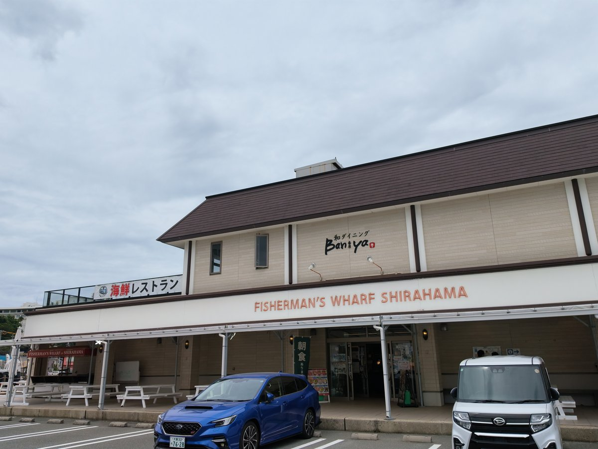

フィッシャーマンズ・ワーフ白浜
和歌山県西牟婁郡白浜町1667-22
備考・犬連れでのポイント
湯崎漁港に面した複合施設。1階が海鮮市場と海洋体験室、2階がレストラン、3階がビアホールで、屋外に海辺のテラス席がある。
犬連れの利用は1階の海側にある屋外席が中心で、購入した海鮮丼などをここで食べられる。
屋内の可否は公式サイトに記載がないため、屋内に入る場合は事前確認推奨。
リード着用とフンの持ち帰りが前提で、ドッグランはなし。駐車場は普通車120台のゲート式で有料。
最初の1時間は無料で、超えると時間ごとに料金がかかり、食事や買い物を利用するとさらに1時間無料になる。
公式サイトには無料駐車場と表記されているが、実際にはゲートがあり時間制の料金体系。
金額は時期により異なるとの案内があるため、長く停める場合は現地で確認のこと。
トイレは男女トイレと多目的トイレを備える。市場は8:00〜17:00で定休日は公式に記載がない。
2階の和ダイニング番屋は11:00〜15:00・17:00〜22:00で火曜定休、3階のBBQ・ビアホールは11:00〜15:00・18:00〜22:00で金曜定休と、店舗ごとに時間も定休日も異なる。
いずれも祝日や繁忙期は変更あり。刺身は手書きの値段が掲示され、その日のネタから選べる。
3階のビアホールは夏が不定休で冬季は休業のため、時期により利用できない。